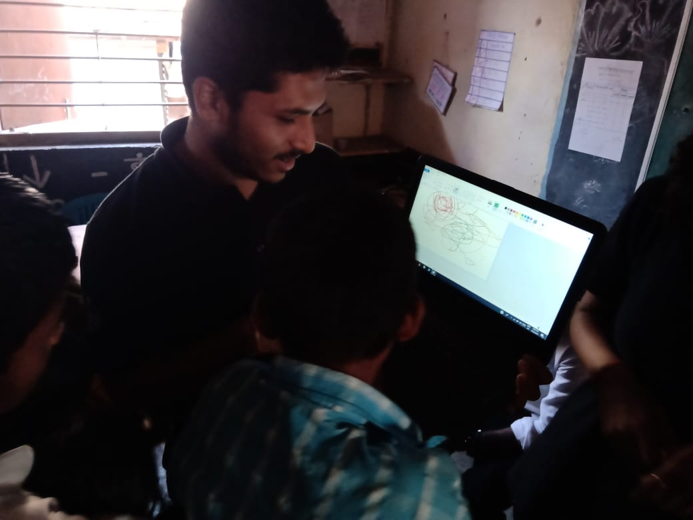
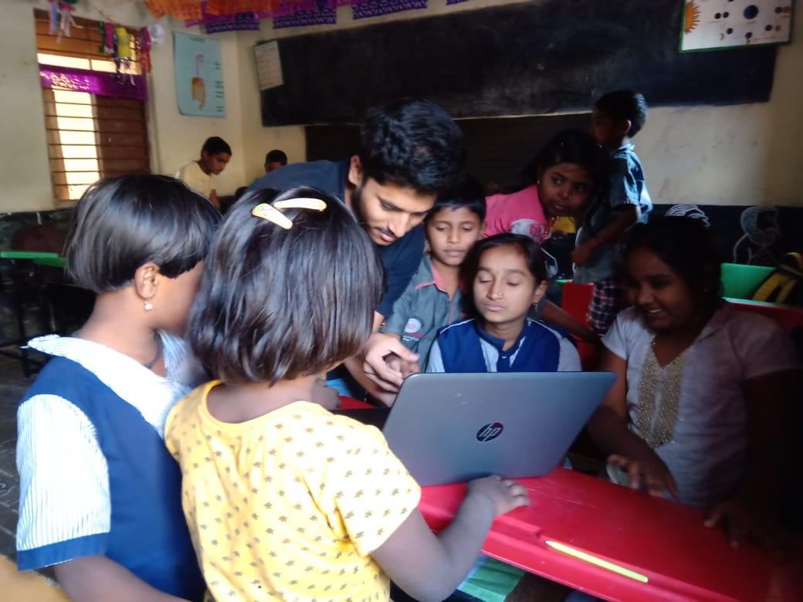
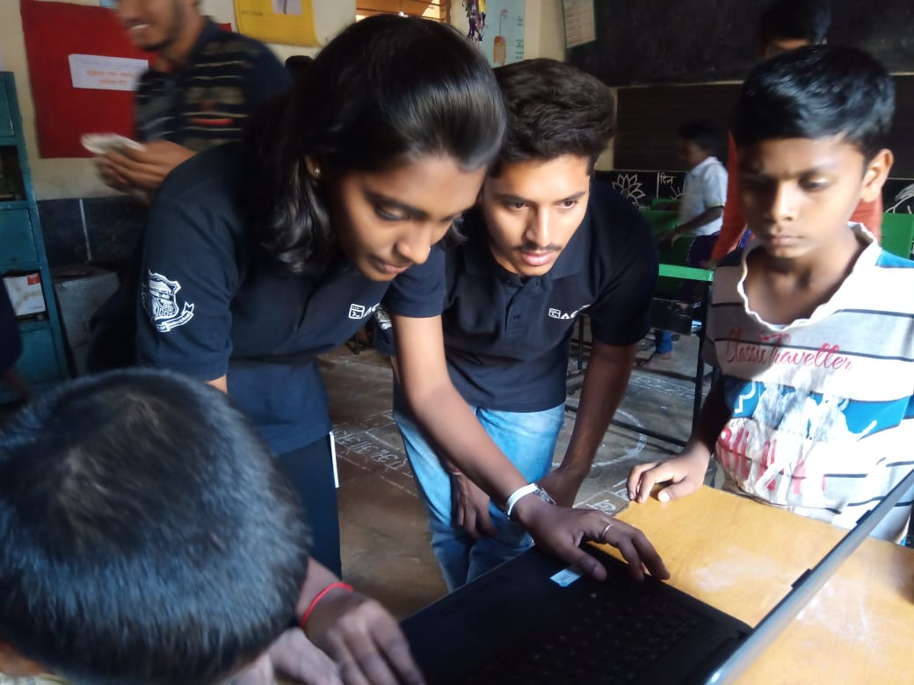
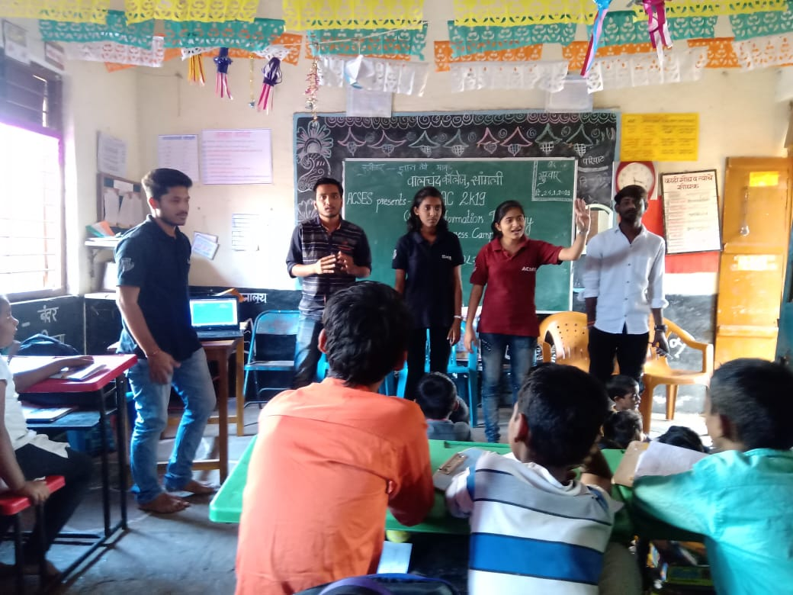
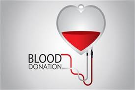

I have volnteered in various social campaigns. One must learn to live in the society and give back whatever he can.
SITAC has changed perspective of students in terms of using computer and helped them grow towards and with the digitization. Our very own club has received many positive feedbacks from the students we had visited previously and they want us to organize more number of events in same respect. Thereby SITAC has definitely implanted the seed of computer knowledge that has been growing with full support of all the students and teachers. It has also led to increase in the knowledge of “Digital India” scheme launched by our respected Prime Minister Mr. Narendra Modi and has received an overwhelming response with support of Municipal Corporation of Sangli and Walchand College of Engineering. And this year we had valuable guidance of Mr. Jayant Nagrale and Mr. Birajdar (Admin Officer). They guided us all the way throughout our campaign as a constant support. Team ACSES extends warm thanks to supporting staff, Mr. Nagrale and admin officer. Many schools have thereby started a mandatory course of “computer” in their schools. Hence, SITAC has not only changed perspective of students but also other people who are now travelling parallel with digitized India. SITAC 2019 mainly focused on giving practical experience to students by providing them hands on session on laptops.
    Blood Donation Importance : 1. Along with helping save lives, there are a number of reasons why donating blood is important. 1. A single donation can save three lives. One blood donation provides different blood components that can help up to three different people.. 2. Blood cannot be manufactured. Despite medical and technological advances, blood cannot be made, so donations are the only way we can give blood to those who need it. 3. Blood is needed every two seconds. Nearly 21 million blood components are transfused in the India every year. 4. Only 37 percent of the country’s population is able to donate blood. 5. Your friends or family may need your blood someday.